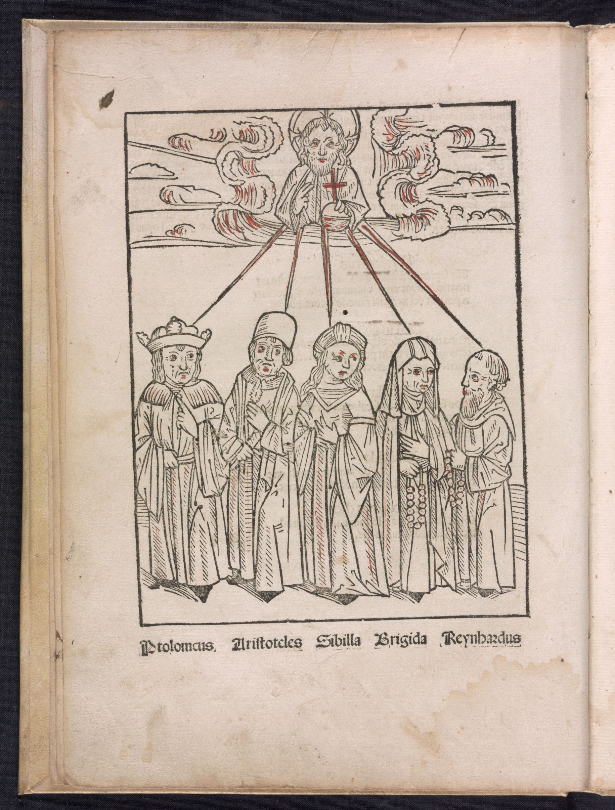

Lichtenberger mentions five prophets on this page: Aristotle, Ptolemy, the Sibyl, Birgitta of Sweden, and the enigmatic hermit that he calls “Brother Reynhart.” Early print editions also included a woodcut image of these five prophets.
 Johannes Lichtenberger, Prognosticatio in Latino (Heidelberg?: 1488), p. 4. Library of Congress, http://hdl.loc.gov/loc.rbc/Rosenwald.0122.1.